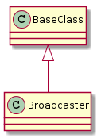

A broadcaster implements a one-to-many pipe.

Broadcaster(receivers) |
A broadcaster sends a single datum to multiple targets | ||
Broadcaster.receivers |
|
||
Broadcaster.temp_receivers |
|
||
Broadcaster.subscribe(receiver) |
Adds a new receiver to the receivers (if it isn’t already there) | ||
Broadcaster.unsubscribe(receiver) |
|
||
Broadcaster.set_up([targets]) |
The targets are removed the next time this is called. | ||
Broadcaster.reset() |
|
||
Broadcaster.__contains__(receiver) |
|
||
Broadcaster.__iter__() |
|
||
Broadcaster.__call__(datum) |
Calls each receiver with the datum |